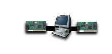
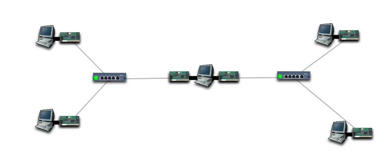
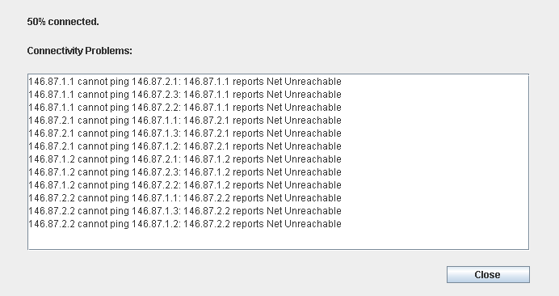
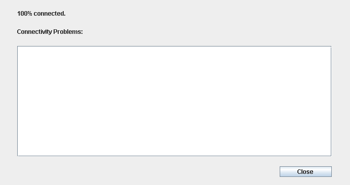

Drag a computer into the centre of the display, and then drag two Ethernet cards to it.

Install the two cards. For this example, install the rightmost card first. To make sure you have done this correctly, hover the mouse over the cards, and you should see "Card 0" over the rightmost card, and "Card 1" over the leftmost card.
Now add other components as in the following diagram, remembering to install the Ethernet cards and enable power on the hubs.

On the computer at the top-left, set the IP address "146.87.1.1" and the netmask "255.255.255.0".
On the computer at the bottom-left, set the IP address "146.87.1.2" and the netmask "255.255.255.0".
On the computer at the top-right, set the IP address "146.87.2.1" and the netmask "255.255.255.0".
On the computer at the bottom-right, set the IP address "146.87.2.2" and the netmask "255.255.255.0".
On Card 0 of the computer in the centre, set the IP address "146.87.2.3" and the netmask "255.255.255.0".
On Card 1 of the computer in the centre, set the IP address "146.87.1.3" and the netmask "255.255.255.0".
Now test the connectivity, and examine the results.

Examining the pairs that can't connect to each other, it is plain that the computers on the 146.87.1.0/24 network cannot communicate with the computers on the 146.87.2.0/24 network.
There are two reasons for this:
Enable Packet Forwarding on the gateway (right-click on it, then select Toggle IP Forwarding).
To the computers in the 146.87.1.0/24 subnet, add a default route of 146.87.1.3 (the IP address of Card 1 on the gateway). To do this, right-click on each computer and select "Add Default Route" then enter 146.87.1.3 in the box that appears and press OK.
To the computers in the 146.87.2.0/24 subnet, add a default route of 146.87.2.3 (the IP address of Card 0 on the gateway).
Note that for each computer, we add a default route to the gateway, but the gateway has two IP addresses. We need to choose which of the addresses to route via. We route via the local address, i.e., the address of the card that is on the same network that we are adding a default route for. Take note of this, it is a key concept.
An analogy for this is that of crossing a bridge. You can't cross a bridge from Manchester to Salford by getting on at the Salford end. You need to get on at the locally-reachable end.
Now test the connectivity.
